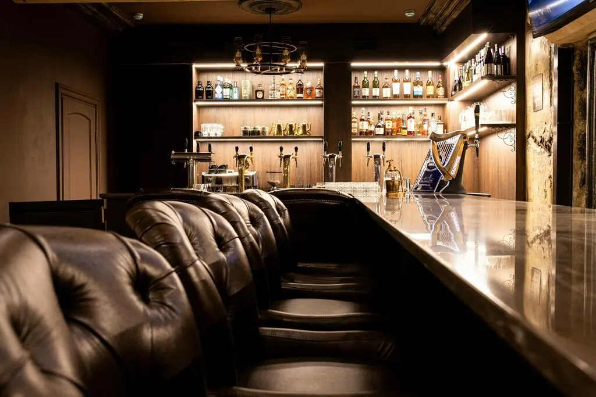
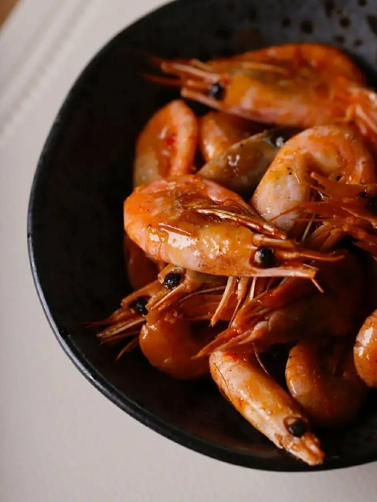
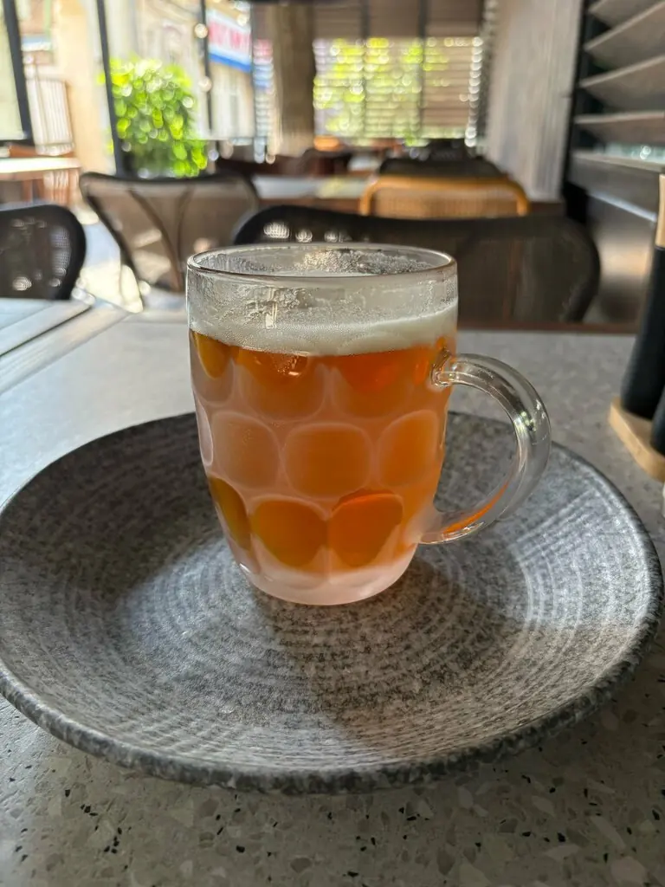
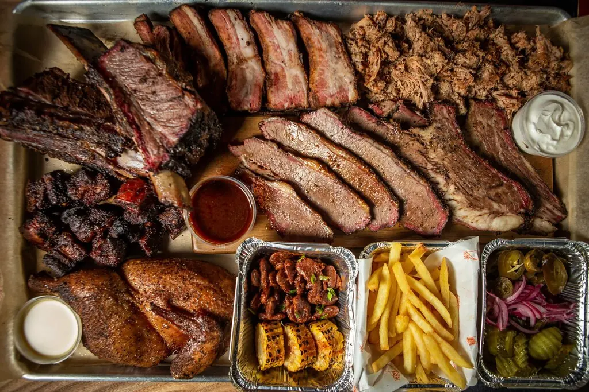
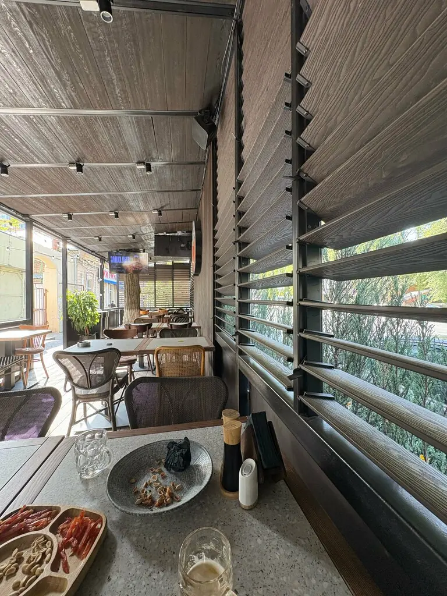

Протокол № 1 · Ростов-на-Дону+7 906 428-25-87
Пивное собрание
Присутствовали: вы и ваши друзья. Кворум есть.
- Выбрать стол на веранде или в зале
- Заказать пиво и раков
- Разное
5,0 · 361 оценка

Голосование по закускам
Квашеная капуста собственного засола290 ₽
Филе сельди с отварным картофелем490 ₽
Ассорти солений550 ₽
Салат с хрустящими баклажанами680 ₽
Тёплый салат с куриной печенью790 ₽
Решение пока не принято.
Часть меню с Яндекс Карт, цены уточняйте у официанта. Голосование для удовольствия, заказ делается в ресторане.
Материалы к собранию




Выступили
Замечательное пиво. Вкусные раки. Хорошее обслуживание! Рекомендуем.Олег Горобец
Очень приятное и душевное заведение! Посидели и получили массу удовольствия. Отличное пиво и очень вкусные блюда.Роман Трикозин
Прекрасное место, уютная обстановка, красивая мебель, вкусные и красивые блюда.Анна Волкова
Собрание объявляется открытым
Ростов-на-Дону, Красноармейская улица, 164АПн–чт и вс 12:00–00:00, пт–сб 12:00–01:00+7 906 428-25-87